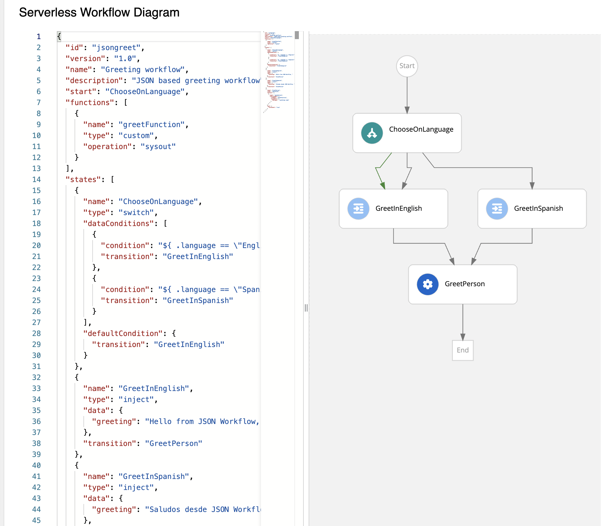

Workflow Instances in SonataFlow Dev UI extension
In SonataFlow Dev UI extension, the Workflow Instances page is used to monitor and manage the available instances. The Workflow Instances page displays a list of available instances and add filters to the list.
To create a workflow instance, you can use the Workflow Definitions page. For more information, see Workflow Definitions in SonataFlow Dev UI extension.
When you create a workflow instance, the instance appears in the workflow instances table on the page, containing the following details:
-
Id: Displays the name and business key of an instance. Also, when you hover on the name of the workflow instance, a unique ID is displayed for the instance. You can click on the ID to navigate to the Workflow Details page.
-
Status: Displays the current state of the instance. This column can contain Active, Completed, Aborted, Error, and Suspended as values.
-
Created: Displays the time reference indicating when the instance is created.
-
Last Update: Displays the time reference indicating when the instance is last updated.
You can also sort the columns of the workflow instances table.
On the Workflow Instances page, you can filter the list of workflow instances based on the states and business keys. By default, Active, Completed, Aborted, Error, and Suspended are applied on the list. You can use the Status drop-down to see the available states. To filter the workflow instances based on the states, select or unselect the states in the Status drop-down and click Apply filter button.
To filter the workflow instances based on business keys, enter a business key in the Filter by business key field and click Apply filter button.
To fetch the newly added workflow instances, click on the refresh icon next to the Apply Filter button. Also, to clear the applied filters and reset to the default state, click Reset to default button.
Opening the Workflow instance details
In the workflow instances table, the Id column contains a clickable link, which enables you to navigate to the Workflow Details page. The Workflow Details page contains various panels, providing detailed information about a workflow instance.
The Workflow Details page consists of the following panels:
-
Serverless Workflow Diagram panel
-
Timeline panel
-
Details panel
-
Variables panel
- Serverless Workflow Diagram panel
-
The Serverless Workflow Diagram panel enables you to explore the workflow diagram and execution path of the workflow instance. The workflow diagram and execution path are displayed by consuming the source which is exposed through the
kogito-addons-quarkus-source-files.To add the source files add-on configuration, add the following dependency to
pom.xmlfile of your project:source-files add-on dependency inpom.xmlfile<dependency> <groupId>org.kie.kogito</groupId> <artifactId>kogito-addons-quarkus-source-files</artifactId> </dependency>There is a slider available in the diagram panel, which when dragged to the right displays the source code in read-only mode.
Figure 5. Stunner based Diagram panel - Timeline panel
-
The Timeline panel displays the list of nodes that are related to a workflow instance. Each node in the Timeline panel consists of an icon, indicating the state of the node, such as Active, Completed, or Error.
Figure 6. Timeline panel - Details panel
-
The Details panel displays the basic information related to a workflow instance, including:
-
Name: Name of the workflow instance.
-
Business key: Business key related to the workflow instance.
-
State: Current state of the workflow instance.
-
Id: Unique ID of the workflow instance.
-
Start: Time reference indicating when the workflow instance is started.
-
Last Updated: Time reference indicating when the workflow instance is last updated.
-
End: Time reference indicating when the workflow instance is completed.
Figure 7. Details panel -
- Variables panel
-
The Variables panel displays the data of a workflow in the form of JSON.
Figure 8. Variables panel
Sending Cloud Events to active Workflow Instances
The Workflow Instances page also allows you to send HTTP Cloud Events to the active workflow instances that are waiting for an event to advance.
To do so you just have to click on the Trigger Cloud Event button that will lead you to the Trigger Cloud Event page.
Once there, you will have to fill out the form with the Cloud Event information:
-
Endpoint: Defines the Path and the HTTP method where the cloud event should be triggered.
-
Event Type: Sets the Cloud Event type header.
-
Event Source: Sets the Cloud Event Source header. Defaults to
/local/quarkus-devUi. -
Instance Id: Sets the id of the workflow instance that must receive the event, it will be added in the
kogitoprocrefidevent header. -
Event Data: Data that will be in the event in JSON format.
Additionally, you can use the Send Cloud Event action present available on the instance actions kebab. By using it you will be lead to the Trigger Cloud Event page, but in this case the Instance Id field will be already filled with the selected workflow id.
|
To enable the actions kebab, make sure your project is configured to have the |
Click the Trigger button to trigger the cloud event. If the event is successfully triggered, a success alert appears at the top of the screen, which contains the Go to workflow list link to navigate to the Workflow Instances page.

If there is an issue while sending the event, then a failure alert appears at the top of the screen, containing View Details and Go to workflow list options. The View Details enables you to view the error message.
Found an issue?
If you find an issue or any misleading information, please feel free to report it here. We really appreciate it!